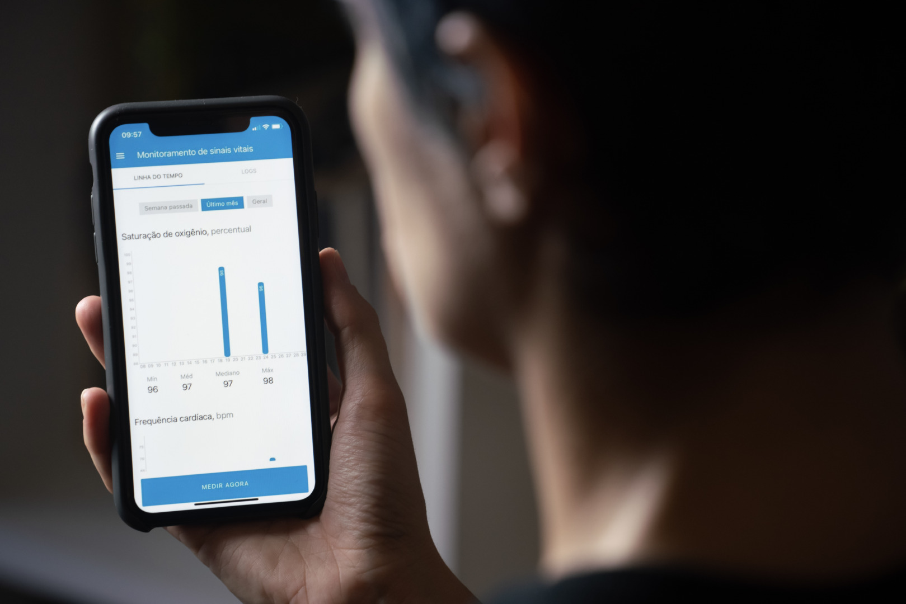

Saúde
Definição
Saúde em cidades inteligentes envolve o uso de tecnologias avançadas para monitorar, prevenir, gerenciar e promover o bem-estar da população. Sistemas integrados, sensores, telemedicina e plataformas digitais permitem um cuidado mais eficiente, acesso facilitado a serviços e maior qualidade de vida para todos os cidadãos.
- Monitoramento de Saúde:
Uso de sensores para detectar sinais vitais e aplicativos que acompanham a saúde da população com alertas em tempo real para emergências. - Infraestrutura Médica Inteligente:
Hospitais automatizados, prontuários eletrônicos acessíveis e gestão eficiente de recursos, com manutenção preventiva via IoT. - Educação em Saúde:
Campanhas digitais de prevenção, plataformas interativas, gamificação e uso de redes sociais para disseminar informação confiável. - Acesso a Serviços de Saúde:
Agendamento online, telemedicina, aplicativos para localização de farmácias e hospitais, filas digitais e inclusão de comunidades afastadas.
Componentes e Funções
- Monitoramento contínuo da saúde da população
- Detecção precoce de problemas de saúde
- Melhoria na qualidade e agilidade dos atendimentos
- Maior acesso a informações de saúde confiáveis
- Inclusão de áreas remotas e populações vulneráveis